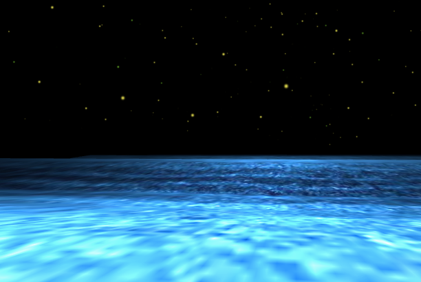
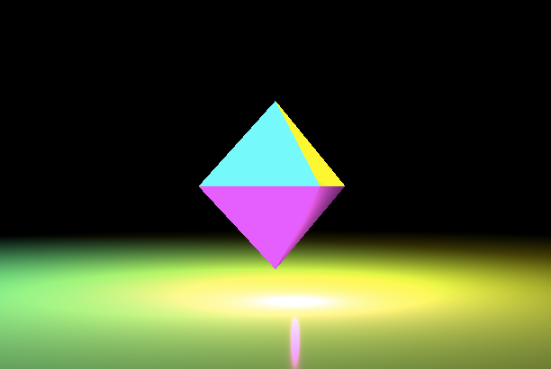
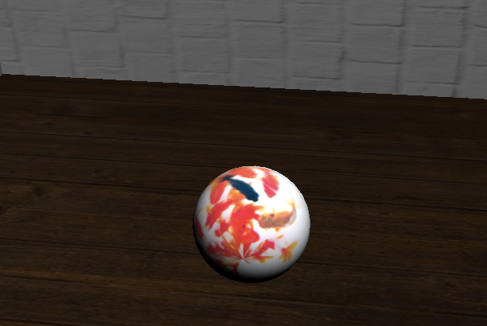
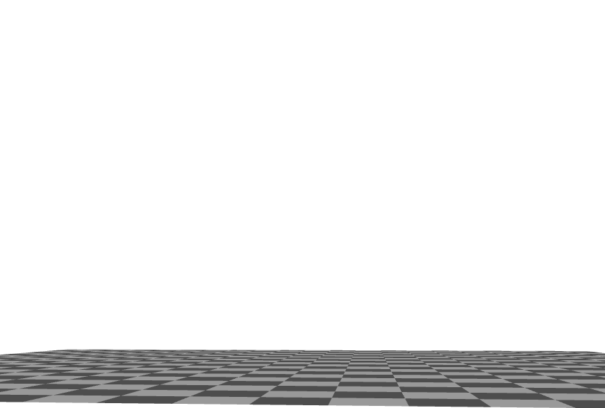

Home
(current)
作品1
作品2
作品3
※ Chromeでは動作確認済みですが、safari・Firefoxでは作品1,3はうまく動かないことがあります。

作品１
波と夜空のCG。乱数で大量に星を配置し、sin関数で波を表現しました。
3分ぐらい見続けると心が癒されて眠くなります。

作品２
鏡面のような表面をしたひし形の物体に、様々な角度から３色の光を当てました。
星の大きさや光の色の数もこだわって表現しています。
床に反射した光が作り出す色の混ざり合いが綺麗です。

作品３
物理っぽいCGも作成したかったため、ただボールが自由落下するCGを作成しました。
平面を回転させて壁も作ってみました。
視点は動かすことができます。
RESETボタンでもう一度ボールを落とすこともできます。
しかし、だんだん高さが上がっていきます。

ボツ作品
これはボツです。
最初にRunge-kutta法で自由落下をさせようと思い
頑張って変数を変えていたところ、変な動きをするようになりました。